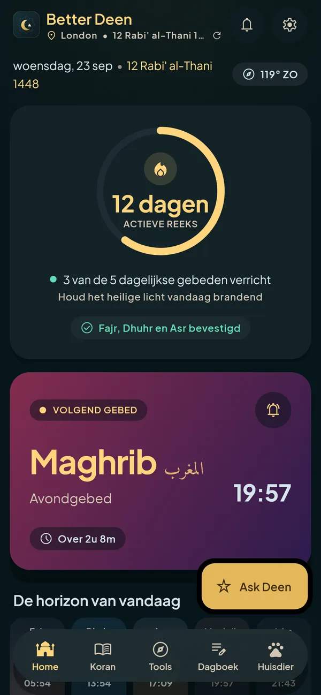
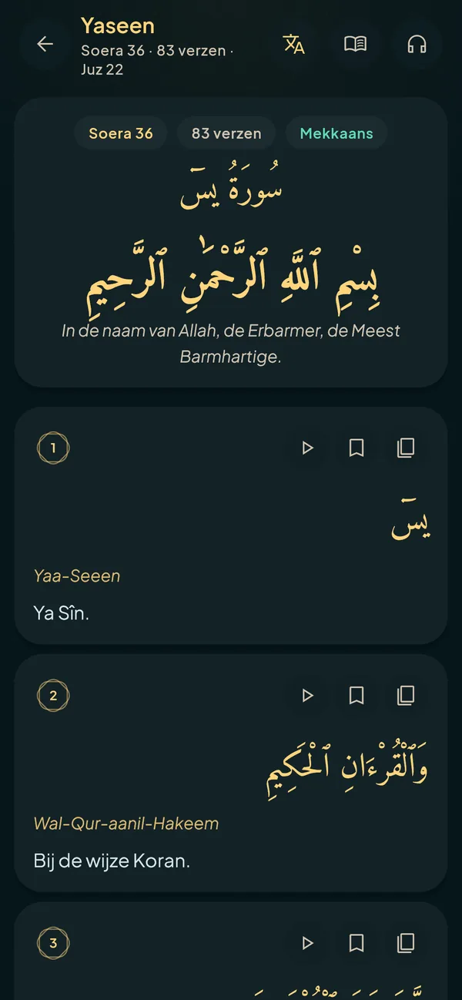
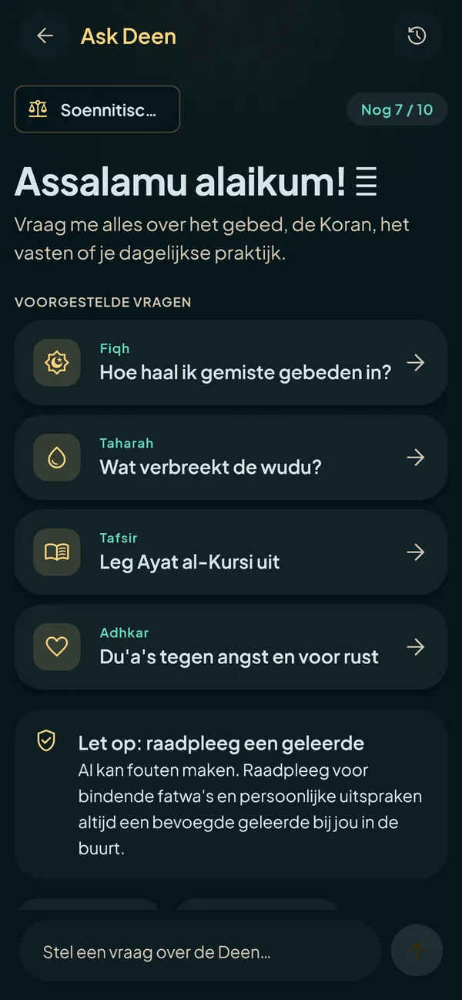
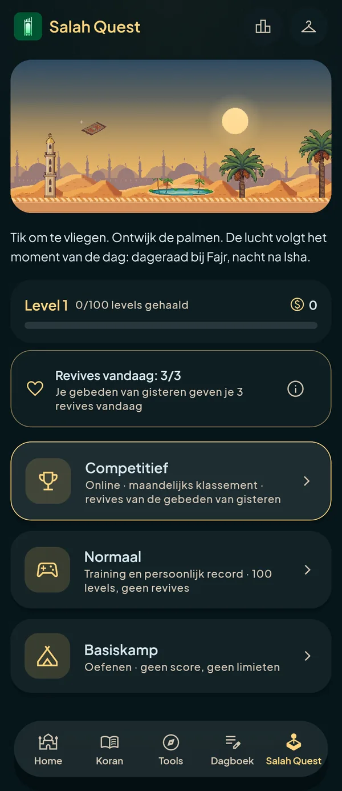
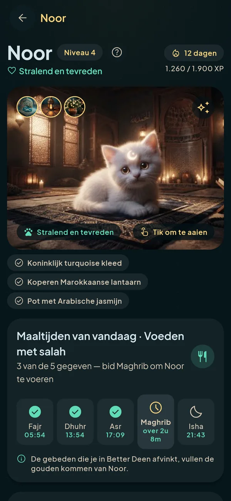
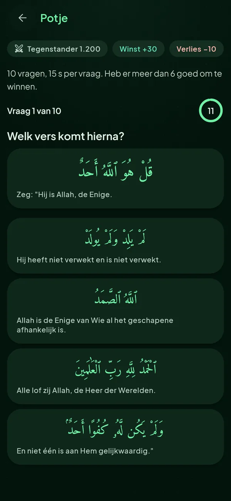
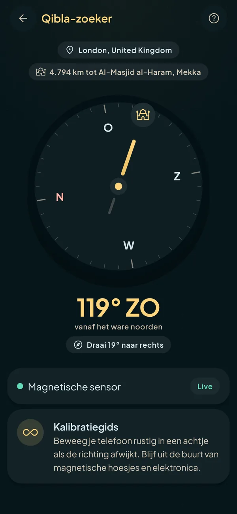

Bid op tijd, elke keer
Gebedstijden berekend op je telefoon met de methode en madhab die je kiest, soennitisch of sjiitisch. Een volledige adhan in de stem die je wilt, herinneringen voor elk gebed, reeksen en widgets op je startscherm.
Voor iPhone en Android
Gebedstijden en adhan, de hele Koran, een assistent voor islamitische kennis en een gloeiend ei dat met elke salah warmer wordt. Rustig, privé en zonder advertenties.
Nu voor Android · Google Play binnenkort
iPhone: binnenkort in de App Store


Kies je taal, berekeningsmethode en madhab. Wij nemen nooit iets voor je aan.
Adhan, herinneringen en widgets op tijd. Registreer elk gebed en zie het ei van Noor warm worden.
Lees en beluister de Koran, vraag het Deen, leer bidden en gebruik elke tool.

Stel vragen over je geloof en je dagelijks leven als moslim en krijg eerst een helder antwoord en daarna de details. Het volgt de school die je kiest, noemt de Koran en hadith waarop het steunt en zegt het als het niet zeker is.
Vlieg met een gebedskleed over de duinen, ontwijk de palmen en zie de lucht de echte gebedstijden volgen. Train offline of klim in het maandelijkse klassement.

Gebedstijden berekend op je telefoon met de methode en madhab die je kiest, soennitisch of sjiitisch. Een volledige adhan in de stem die je wilt, herinneringen voor elk gebed, reeksen en widgets op je startscherm.
Uthmani-tekst met vertaling en transliteratie, een moeshaf pagina voor pagina, en recitaties van honderden reciteerders, met offline downloads en een speler die op de achtergrond doorspeelt.

Een hemels ei dat warmer wordt met elk gebed dat je bijhoudt: er verschijnen lichtscheuren en met alle vijf straalt het. Tik erop om het te laten schommelen en versier het met de schatten die je ontgrendelt. Een vriendelijke reden om vijf keer per dag terug te komen.

Uit welke soera komt het? Wat komt er hierna? Tien vragen op tijd over de letterlijke tekst, een wereldranglijst en seizoenen. Na elke wedstrijd opent elk vers in de lezer.

Qibla-kompas, tasbih, dagboek, islamitische kalender en vasten, stap voor stap leren bidden, gebedstijden in het vliegtuig, en Salah Focus om je telefoon weg te leggen als het tijd is.
Tik in de app op de ? in een tool om te zien hoe het werkt.
Echte woorden van echte gebruikers.
Nog geen recensies. De jouwe kan de eerste zijn.
Vertel anderen hoe Better Deen je helpt. We lezen elke recensie en publiceren de recensies die we kunnen delen.
We hebben je recensie ontvangen. We lezen hem voordat hij op de website verschijnt.
Begin met 7 dagen gratis. Zeg je op in je store-account voordat ze voorbij zijn, dan betaal je niets.
Prijzen in Amerikaanse dollars; de store toont de prijs in jouw valuta.
Geen moslim zou het moeten missen vanwege geld. Kun je echt niet betalen, beloof het dan bij Allah in de app en gebruik alles een jaar gratis. Meer wordt er niet van je gevraagd.
Better Deen heeft geen advertenties en verkoopt geen gegevens. Helpt het je, dan kun je de ontwikkeling steunen met een donatie. Het is helemaal vrijblijvend: geef alleen wat je gemakkelijk kunt missen en maak de intentie alleen voor Allah.
DonerenDie je kiest: Muslim World League, Umm al-Qura, ISNA, Egyptisch, Karachi, Ja'fari, Teheran en meer, met de madhab voor Asr en een handmatige aanpassing per gebed.
Je krijgt 7 dagen gratis proberen, daarna kost het $2,99 per maand of $29,99 per jaar. Kun je het echt niet betalen, dan kun je dat in de app bij Allah zweren en alles een jaar gratis gebruiken.
Nee. Het geeft algemene kennis met bronnen, zodat je kunt leren en controleren. Voor persoonlijke uitspraken en gevoelige zaken vraag je een bevoegde geleerde.
Ja. Gebedstijden, de Qibla, de adhan, de Korantekst, tasbih en je dagboek hebben geen verbinding nodig. Ask Deen, recitaties beluisteren en de Arena wel.
Engels, Spaans, Arabisch en Nederlands, met Arabisch volledig van rechts naar links.
Ja voor gebedstijden (inclusief de Ja'fari- en Teheran-methode) en voor de school die Ask Deen volgt. De hadithbibliotheek bevat nu alleen soennitische collecties.
Ze worden naar een AI-aanbieder gestuurd om te worden beantwoord, zonder je naam of accountgegevens, en bewaard in je geschiedenis op je eigen telefoon. Zie het privacybeleid voor de details.
Het abonnement betaalt de app, dus die hoeft nooit je aandacht of je gegevens te verkopen.
In je Google Play- of App Store-account, onder Abonnementen. In de app staat een snelkoppeling in Instellingen → Abonnement.
Hij komt binnenkort naar Google Play en de App Store. Tot die tijd kunnen Android-gebruikers hem installeren via de downloadpagina.
Download Better Deen en laat je volgende gebed op tijd zijn.
Downloaden voor AndroidiPhone: binnenkort in de App Store